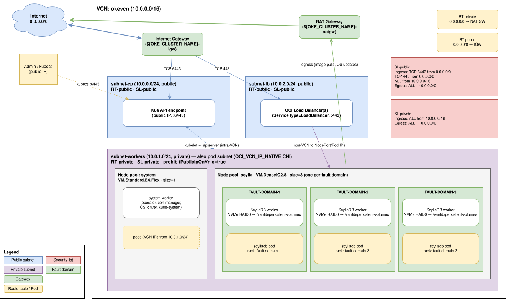

Was this page helpful?
Reference deployment: OKE¶
This guide walks you through a complete end-to-end ScyllaDB deployment on Oracle Container Engine for Kubernetes (OKE), from creating the network and the Kubernetes cluster all the way to running CQL queries. The deployment is suitable as a baseline for production workloads.
Prerequisites¶
An Oracle Cloud Infrastructure account with permissions to create networking, Container Engine, and Compute resources in a target compartment.
The
ociCLI installed and configured (oci setup config).kubectlinstalled.A Dense I/O instance shape available in your target region with capacity for 3 worker nodes.
Set environment variables¶
The rest of the guide refers to the variables defined here. Adjust them to match your environment, then export them in your shell:
# Target region and compartment.
# Replace the compartment OCID below with one of your own; you can list
# compartments with: oci iam compartment list --all
export OCI_REGION='us-sanjose-1'
export OCI_COMPARTMENT_OCID='ocid1.compartment.oc1..aaaaaaaa<replace-with-your-compartment-ocid>'
# Names used for the resources created below.
export OKE_CLUSTER_NAME='scylladb-demo'
export OKE_VCN_NAME="${OKE_CLUSTER_NAME}-vcn"
# Compute shapes.
# General-purpose pool runs system workloads (operator, cert-manager, etc.).
export GENERAL_NODE_SHAPE='VM.Standard.E4.Flex'
export GENERAL_NODE_OCPUS='2'
export GENERAL_NODE_MEMORY_GBS='16'
# Dedicated ScyllaDB pool. Dense I/O shapes provide local NVMe SSDs.
# See https://docs.oracle.com/en-us/iaas/Content/Compute/References/computeshapes.htm#vm-dense
export SCYLLA_NODE_SHAPE='VM.DenseIO2.8'
Discover and pin the latest Kubernetes version supported by OKE in your region:
export K8S_VERSION="$(
oci ce cluster-options get \
--cluster-option-id all \
--region "${OCI_REGION}" \
--query 'max_by(data."kubernetes-versions"[*], &@)' --raw-output
)"
echo "K8S_VERSION=${K8S_VERSION}"
The first availability domain in the region is used in the commands below. You can list the available domains with:
oci iam availability-domain list \
--region "${OCI_REGION}" \
--compartment-id "${OCI_COMPARTMENT_OCID}" \
--query 'data[].name' --raw-output
For convenience, capture the first one:
export OCI_AD="$(
oci iam availability-domain list \
--region "${OCI_REGION}" \
--compartment-id "${OCI_COMPARTMENT_OCID}" \
--query 'data[0].name' --raw-output
)"
Note
In single-AD regions (such as us-sanjose-1), high availability for ScyllaDB is achieved by spreading nodes across the three fault domains within the AD (FAULT-DOMAIN-1, FAULT-DOMAIN-2, FAULT-DOMAIN-3).
The ScyllaCluster manifest below uses one rack per fault domain.
Create the network¶
OKE requires a VCN with appropriate subnets, gateways, route tables, and security rules. The topology created in this section is the minimum needed for an OKE cluster with VCN-Native Pod Networking and a public Kubernetes API endpoint. For full background on the supported topologies, see the Container Engine for Kubernetes Networking reference.
The resources created are:
a VCN (
10.0.0.0/16),an Internet Gateway and a NAT Gateway,
a public route table (default route → IGW) and a private route table (default route → NAT GW),
a public security list (ingress TCP
6443and443from anywhere, plus all intra-VCN traffic) and a private security list (ingress all from inside the VCN),three regional subnets — control plane, workers, and Kubernetes Service load balancers.

OKE reference network architecture.¶
Create the VCN¶
oci network vcn create \
--region "${OCI_REGION}" \
--compartment-id "${OCI_COMPARTMENT_OCID}" \
--display-name "${OKE_VCN_NAME}" \
--cidr-blocks '["10.0.0.0/16"]' \
--dns-label 'okevcn'
Capture the VCN OCID:
export OKE_VCN_OCID="$(
oci network vcn list \
--region "${OCI_REGION}" \
--compartment-id "${OCI_COMPARTMENT_OCID}" \
--display-name "${OKE_VCN_NAME}" \
--query 'data[0].id' --raw-output
)"
See also
Creating a VCN in the OCI documentation.
Create gateways¶
An Internet Gateway for the public subnets and a NAT Gateway so private worker nodes can reach the public internet for image pulls and OS updates:
oci network internet-gateway create \
--region "${OCI_REGION}" \
--compartment-id "${OCI_COMPARTMENT_OCID}" \
--vcn-id "${OKE_VCN_OCID}" \
--is-enabled true \
--display-name "${OKE_CLUSTER_NAME}-igw"
oci network nat-gateway create \
--region "${OCI_REGION}" \
--compartment-id "${OCI_COMPARTMENT_OCID}" \
--vcn-id "${OKE_VCN_OCID}" \
--display-name "${OKE_CLUSTER_NAME}-natgw"
Capture the gateway OCIDs:
export OKE_IGW_OCID="$(oci network internet-gateway list --region "${OCI_REGION}" --compartment-id "${OCI_COMPARTMENT_OCID}" --vcn-id "${OKE_VCN_OCID}" --query 'data[0].id' --raw-output)"
export OKE_NATGW_OCID="$(oci network nat-gateway list --region "${OCI_REGION}" --compartment-id "${OCI_COMPARTMENT_OCID}" --vcn-id "${OKE_VCN_OCID}" --query 'data[0].id' --raw-output)"
See also
Internet Gateway and NAT Gateway in the OCI documentation.
Create route tables¶
A public route table sending 0.0.0.0/0 to the Internet Gateway, and a private route table sending 0.0.0.0/0 to the NAT Gateway:
oci network route-table create \
--region "${OCI_REGION}" \
--compartment-id "${OCI_COMPARTMENT_OCID}" \
--vcn-id "${OKE_VCN_OCID}" \
--display-name "${OKE_CLUSTER_NAME}-rt-public" \
--route-rules "[{\"destination\": \"0.0.0.0/0\", \"destinationType\": \"CIDR_BLOCK\", \"networkEntityId\": \"${OKE_IGW_OCID}\"}]"
oci network route-table create \
--region "${OCI_REGION}" \
--compartment-id "${OCI_COMPARTMENT_OCID}" \
--vcn-id "${OKE_VCN_OCID}" \
--display-name "${OKE_CLUSTER_NAME}-rt-private" \
--route-rules "[{\"destination\": \"0.0.0.0/0\", \"destinationType\": \"CIDR_BLOCK\", \"networkEntityId\": \"${OKE_NATGW_OCID}\"}]"
export OKE_PUBLIC_RT_OCID="$(oci network route-table list --region "${OCI_REGION}" --compartment-id "${OCI_COMPARTMENT_OCID}" --vcn-id "${OKE_VCN_OCID}" --display-name "${OKE_CLUSTER_NAME}-rt-public" --query 'data[0].id' --raw-output)"
export OKE_PRIVATE_RT_OCID="$(oci network route-table list --region "${OCI_REGION}" --compartment-id "${OCI_COMPARTMENT_OCID}" --vcn-id "${OKE_VCN_OCID}" --display-name "${OKE_CLUSTER_NAME}-rt-private" --query 'data[0].id' --raw-output)"
See also
VCN Route Tables in the OCI documentation.
Create security lists¶
Two security lists are created here: a public one (Kubernetes API and Service load balancers from the internet, plus all intra-VCN traffic) and a private one (intra-VCN only). For deployments with a tighter security posture, prefer the more granular Network Security Groups (NSGs) documented in the OKE network resource configuration guide.
# Public security list: allows HTTPS to the Kubernetes API endpoint (6443)
# and to Service-type=LoadBalancer load balancers (443) from anywhere, plus
# unrestricted intra-VCN traffic.
oci network security-list create \
--region "${OCI_REGION}" \
--compartment-id "${OCI_COMPARTMENT_OCID}" \
--vcn-id "${OKE_VCN_OCID}" \
--display-name "${OKE_CLUSTER_NAME}-sl-public" \
--egress-security-rules '[{"destination": "0.0.0.0/0", "destinationType": "CIDR_BLOCK", "protocol": "all", "isStateless": false}]' \
--ingress-security-rules '[
{"source": "0.0.0.0/0", "sourceType": "CIDR_BLOCK", "protocol": "6", "isStateless": false, "tcpOptions": {"destinationPortRange": {"min": 6443, "max": 6443}}},
{"source": "0.0.0.0/0", "sourceType": "CIDR_BLOCK", "protocol": "6", "isStateless": false, "tcpOptions": {"destinationPortRange": {"min": 443, "max": 443}}},
{"source": "10.0.0.0/16","sourceType": "CIDR_BLOCK", "protocol": "all", "isStateless": false}
]'
# Private security list: allows all intra-VCN traffic; egress everywhere.
oci network security-list create \
--region "${OCI_REGION}" \
--compartment-id "${OCI_COMPARTMENT_OCID}" \
--vcn-id "${OKE_VCN_OCID}" \
--display-name "${OKE_CLUSTER_NAME}-sl-private" \
--egress-security-rules '[{"destination": "0.0.0.0/0", "destinationType": "CIDR_BLOCK", "protocol": "all", "isStateless": false}]' \
--ingress-security-rules '[
{"source": "10.0.0.0/16", "sourceType": "CIDR_BLOCK", "protocol": "all", "isStateless": false}
]'
export OKE_PUBLIC_SL_OCID="$(oci network security-list list --region "${OCI_REGION}" --compartment-id "${OCI_COMPARTMENT_OCID}" --vcn-id "${OKE_VCN_OCID}" --display-name "${OKE_CLUSTER_NAME}-sl-public" --query 'data[0].id' --raw-output)"
export OKE_PRIVATE_SL_OCID="$(oci network security-list list --region "${OCI_REGION}" --compartment-id "${OCI_COMPARTMENT_OCID}" --vcn-id "${OKE_VCN_OCID}" --display-name "${OKE_CLUSTER_NAME}-sl-private" --query 'data[0].id' --raw-output)"
See also
Security Lists in the OCI documentation.
Create subnets¶
Three regional subnets, all /24:
subnet-cp— public, hosts the Kubernetes API endpoint.subnet-workers— private, hosts worker nodes and pods.subnet-lb— public, hosts load balancers fronting Kubernetes Services of typeLoadBalancer.
# Control-plane subnet (public).
oci network subnet create \
--region "${OCI_REGION}" \
--compartment-id "${OCI_COMPARTMENT_OCID}" \
--vcn-id "${OKE_VCN_OCID}" \
--display-name "${OKE_CLUSTER_NAME}-subnet-cp" \
--cidr-block '10.0.0.0/24' \
--dns-label 'cp' \
--route-table-id "${OKE_PUBLIC_RT_OCID}" \
--security-list-ids "[\"${OKE_PUBLIC_SL_OCID}\"]" \
--prohibit-public-ip-on-vnic false
# Worker (and pod) subnet (private).
oci network subnet create \
--region "${OCI_REGION}" \
--compartment-id "${OCI_COMPARTMENT_OCID}" \
--vcn-id "${OKE_VCN_OCID}" \
--display-name "${OKE_CLUSTER_NAME}-subnet-workers" \
--cidr-block '10.0.1.0/24' \
--dns-label 'workers' \
--route-table-id "${OKE_PRIVATE_RT_OCID}" \
--security-list-ids "[\"${OKE_PRIVATE_SL_OCID}\"]" \
--prohibit-public-ip-on-vnic true
# Service-LB subnet (public).
oci network subnet create \
--region "${OCI_REGION}" \
--compartment-id "${OCI_COMPARTMENT_OCID}" \
--vcn-id "${OKE_VCN_OCID}" \
--display-name "${OKE_CLUSTER_NAME}-subnet-lb" \
--cidr-block '10.0.2.0/24' \
--dns-label 'lb' \
--route-table-id "${OKE_PUBLIC_RT_OCID}" \
--security-list-ids "[\"${OKE_PUBLIC_SL_OCID}\"]" \
--prohibit-public-ip-on-vnic false
export OKE_CP_SUBNET_OCID="$( oci network subnet list --region "${OCI_REGION}" --compartment-id "${OCI_COMPARTMENT_OCID}" --vcn-id "${OKE_VCN_OCID}" --display-name "${OKE_CLUSTER_NAME}-subnet-cp" --query 'data[0].id' --raw-output)"
export OKE_WORKERS_SUBNET_OCID="$(oci network subnet list --region "${OCI_REGION}" --compartment-id "${OCI_COMPARTMENT_OCID}" --vcn-id "${OKE_VCN_OCID}" --display-name "${OKE_CLUSTER_NAME}-subnet-workers" --query 'data[0].id' --raw-output)"
export OKE_LB_SUBNET_OCID="$( oci network subnet list --region "${OCI_REGION}" --compartment-id "${OCI_COMPARTMENT_OCID}" --vcn-id "${OKE_VCN_OCID}" --display-name "${OKE_CLUSTER_NAME}-subnet-lb" --query 'data[0].id' --raw-output)"
See also
Creating a Subnet in the OCI documentation.
Create the OKE cluster¶
oci ce cluster create \
--region "${OCI_REGION}" \
--compartment-id "${OCI_COMPARTMENT_OCID}" \
--vcn-id "${OKE_VCN_OCID}" \
--name "${OKE_CLUSTER_NAME}" \
--kubernetes-version "${K8S_VERSION}" \
--type ENHANCED_CLUSTER \
--endpoint-subnet-id "${OKE_CP_SUBNET_OCID}" \
--endpoint-public-ip-enabled true \
--service-lb-subnet-ids "[\"${OKE_LB_SUBNET_OCID}\"]" \
--cluster-pod-network-options '[{"cniType": "OCI_VCN_IP_NATIVE"}]' \
--max-wait-seconds 1800 --wait-interval-seconds 30 \
--wait-for-state SUCCEEDED \
--wait-for-state FAILED
export OKE_CLUSTER_OCID="$(
oci ce cluster list \
--region "${OCI_REGION}" \
--compartment-id "${OCI_COMPARTMENT_OCID}" \
--name "${OKE_CLUSTER_NAME}" \
--lifecycle-state ACTIVE \
--query 'data[0].id' --raw-output
)"
See also
Creating a Cluster in the OCI documentation.
Discover the worker node image¶
OKE publishes pre-baked Oracle Linux images for each supported Kubernetes version. Pick the latest one matching K8S_VERSION:
export OKE_NODE_IMAGE_OCID="$(
oci ce node-pool-options get \
--node-pool-option-id "${OKE_CLUSTER_OCID}" \
--region "${OCI_REGION}" \
--query "max_by(data.sources[?contains(\"source-name\",'Oracle-Linux-8.') && contains(\"source-name\",'-OKE-${K8S_VERSION#v}-') && !contains(\"source-name\",'aarch64') && !contains(\"source-name\",'GPU')], &\"source-name\").\"image-id\"" \
--raw-output
)"
echo "OKE_NODE_IMAGE_OCID=${OKE_NODE_IMAGE_OCID}"
Expected output:
OKE_NODE_IMAGE_OCID=ocid1.image.oc1.eu-frankfurt-1.aaaaaaaaxxxxxxxxxxxxxxxxxxxxxxxxxxxxxxxxxxxxxxxxxxxxxxxxxxx
Create the general-purpose node pool¶
This pool runs system components (cert-manager, ScyllaDB Operator, etc.):
oci ce node-pool create \
--region "${OCI_REGION}" \
--compartment-id "${OCI_COMPARTMENT_OCID}" \
--cluster-id "${OKE_CLUSTER_OCID}" \
--name 'system' \
--kubernetes-version "${K8S_VERSION}" \
--node-shape "${GENERAL_NODE_SHAPE}" \
--node-shape-config "{\"ocpus\": ${GENERAL_NODE_OCPUS}, \"memoryInGBs\": ${GENERAL_NODE_MEMORY_GBS}}" \
--node-source-details "{\"sourceType\": \"IMAGE\", \"imageId\": \"${OKE_NODE_IMAGE_OCID}\", \"bootVolumeSizeInGBs\": 50}" \
--placement-configs "[{\"availabilityDomain\": \"${OCI_AD}\", \"subnetId\": \"${OKE_WORKERS_SUBNET_OCID}\"}]" \
--pod-subnet-ids "[\"${OKE_WORKERS_SUBNET_OCID}\"]" \
--size 1 \
--max-wait-seconds 1800 --wait-interval-seconds 30 \
--wait-for-state SUCCEEDED \
--wait-for-state FAILED
Create the dedicated ScyllaDB node pool¶
This pool runs ScyllaDB pods exclusively. The Cloud-Init script enables the static CPU manager policy, which is required for CPU pinning.
curl --fail --retry 5 --retry-all-errors -o 'cloud-init.sh' -L https://raw.githubusercontent.com/scylladb/scylla-operator/master/examples/oke/cloud-init.sh
Pin the ScyllaDB nodes across all 3 fault domains in the AD:
oci ce node-pool create \
--region "${OCI_REGION}" \
--compartment-id "${OCI_COMPARTMENT_OCID}" \
--cluster-id "${OKE_CLUSTER_OCID}" \
--name 'scylla' \
--kubernetes-version "${K8S_VERSION}" \
--node-shape "${SCYLLA_NODE_SHAPE}" \
--node-source-details "{\"sourceType\": \"IMAGE\", \"imageId\": \"${OKE_NODE_IMAGE_OCID}\", \"bootVolumeSizeInGBs\": 50}" \
--placement-configs "[
{\"availabilityDomain\": \"${OCI_AD}\", \"subnetId\": \"${OKE_WORKERS_SUBNET_OCID}\", \"faultDomains\": [\"FAULT-DOMAIN-1\", \"FAULT-DOMAIN-2\", \"FAULT-DOMAIN-3\"]}
]" \
--pod-subnet-ids "[\"${OKE_WORKERS_SUBNET_OCID}\"]" \
--size 3 \
--initial-node-labels '[{"key": "scylla.scylladb.com/node-type", "value": "scylla"}]' \
--node-metadata "{\"user_data\": \"$(base64 -w0 cloud-init.sh)\"}" \
--max-wait-seconds 1800 --wait-interval-seconds 30 \
--wait-for-state SUCCEEDED \
--wait-for-state FAILED
Note
OKE’s node-pool create API does not accept Kubernetes node taints directly.
We apply the taint via kubectl after the kubeconfig is fetched in the next step.
See also
Creating a Node Pool in the OCI documentation.
Get cluster credentials¶
oci ce cluster create-kubeconfig \
--region "${OCI_REGION}" \
--cluster-id "${OKE_CLUSTER_OCID}" \
--file "${HOME}/.kube/config" \
--token-version '2.0.0' \
--kube-endpoint PUBLIC_ENDPOINT
Verify connectivity and node readiness:
kubectl get nodes -L scylla.scylladb.com/node-type -L oci.oraclecloud.com/fault-domain
Expected output (node names and ages will differ):
NAME STATUS ROLES AGE VERSION NODE-TYPE FAULT-DOMAIN
10.0.1.10 Ready node 10m v1.32.1 FAULT-DOMAIN-1
10.0.1.20 Ready node 5m v1.32.1 scylla FAULT-DOMAIN-1
10.0.1.21 Ready node 5m v1.32.1 scylla FAULT-DOMAIN-2
10.0.1.22 Ready node 5m v1.32.1 scylla FAULT-DOMAIN-3
See also
Downloading a kubeconfig File in the OCI documentation.
Taint the dedicated ScyllaDB nodes¶
Use the label applied at node-pool creation to select the dedicated nodes and apply the matching taint:
kubectl taint nodes -l 'scylla.scylladb.com/node-type=scylla' \
scylla-operator.scylladb.com/dedicated=scyllaclusters:NoSchedule --overwrite
Install ScyllaDB Operator¶
Install cert-manager¶
kubectl apply --server-side -f=https://raw.githubusercontent.com/scylladb/scylla-operator/master/examples/third-party/cert-manager.yaml
kubectl wait --for='condition=established' --timeout=60s crd/certificates.cert-manager.io crd/issuers.cert-manager.io
for deploy in cert-manager{,-cainjector,-webhook}; do
kubectl -n=cert-manager rollout status --timeout=10m deployment.apps/"${deploy}"
done
Install ScyllaDB Operator¶
kubectl -n=scylla-operator apply --server-side -f=https://raw.githubusercontent.com/scylladb/scylla-operator/master/deploy/operator.yaml
kubectl wait --for='condition=established' --timeout=60s crd/scyllaclusters.scylla.scylladb.com crd/nodeconfigs.scylla.scylladb.com crd/scyllaoperatorconfigs.scylla.scylladb.com crd/scylladbmonitorings.scylla.scylladb.com
kubectl -n=scylla-operator rollout status --timeout=10m deployment.apps/{scylla-operator,webhook-server}
Set up NodeConfig¶
Apply the OKE NodeConfig to provision local NVMe storage and apply ScyllaDB sysctl tuning:
kubectl apply --server-side -f=https://raw.githubusercontent.com/scylladb/scylla-operator/master/examples/oke/nodeconfig.yaml
Wait for the NodeConfig to finish reconciling on all nodes:
kubectl wait --timeout=10m --for='condition=Progressing=False' nodeconfigs.scylla.scylladb.com/scylladb-nodepool-1
kubectl wait --timeout=10m --for='condition=Degraded=False' nodeconfigs.scylla.scylladb.com/scylladb-nodepool-1
kubectl wait --timeout=10m --for='condition=Available=True' nodeconfigs.scylla.scylladb.com/scylladb-nodepool-1
Install Local CSI Driver¶
kubectl -n=local-csi-driver apply --server-side -f=https://raw.githubusercontent.com/scylladb/scylla-operator/master/examples/common/local-volume-provisioner/local-csi-driver/{00_clusterrole_def,00_clusterrole_def_openshift,00_clusterrole,00_namespace,00_scylladb-local-xfs.storageclass,10_csidriver,10_serviceaccount,20_clusterrolebinding,50_daemonset}.yaml
kubectl -n=local-csi-driver rollout status --timeout=10m daemonset.apps/local-csi-driver
Deploy a ScyllaDB cluster¶
Create a ConfigMap with extra scylla.yaml settings (here, enabling authentication and authorization):
kubectl apply --server-side -f=- <<EOF
apiVersion: v1
kind: ConfigMap
metadata:
name: scylladb-config
data:
scylla.yaml: |
authenticator: PasswordAuthenticator
authorizer: CassandraAuthorizer
EOF
Create a tuned ScyllaDB cluster with one rack per fault domain.
kubectl apply --server-side -f=- <<EOF
apiVersion: scylla.scylladb.com/v1
kind: ScyllaCluster
metadata:
name: scylladb
spec:
repository: docker.io/scylladb/scylla
version: 2026.1.1
agentVersion: 3.9.1
automaticOrphanedNodeCleanup: true
datacenter:
name: ${OCI_REGION} # Datacenter name matches the OCI region.
racks:
- name: fault-domain-1 # One rack per fault domain in the AD.
members: 1
scyllaConfig: scylladb-config
storage:
capacity: 100Gi
storageClassName: scylladb-local-xfs
resources:
# requests must equal limits for CPU pinning (Guaranteed QoS).
# The values below are sized for VM.DenseIO2.8 (8 OCPUs, 120 GB RAM),
# leaving ~2 OCPUs and ~30 GB RAM for the OS, kubelet, and DaemonSets;
# adjust them if you pick a different shape.
requests:
cpu: 6
memory: 90Gi
limits:
cpu: 6
memory: 90Gi
agentResources:
requests:
cpu: 100m
memory: 20Mi
limits:
cpu: 100m
memory: 20Mi
placement:
nodeAffinity:
requiredDuringSchedulingIgnoredDuringExecution:
nodeSelectorTerms:
- matchExpressions:
- key: scylla.scylladb.com/node-type
operator: In
values:
- scylla
- key: oci.oraclecloud.com/fault-domain
operator: In
values:
- FAULT-DOMAIN-1
tolerations:
- key: scylla-operator.scylladb.com/dedicated
operator: Equal
value: scyllaclusters
effect: NoSchedule
- name: fault-domain-2
members: 1
scyllaConfig: scylladb-config
storage:
capacity: 100Gi
storageClassName: scylladb-local-xfs
resources:
requests:
cpu: 6
memory: 90Gi
limits:
cpu: 6
memory: 90Gi
agentResources:
requests:
cpu: 100m
memory: 20Mi
limits:
cpu: 100m
memory: 20Mi
placement:
nodeAffinity:
requiredDuringSchedulingIgnoredDuringExecution:
nodeSelectorTerms:
- matchExpressions:
- key: scylla.scylladb.com/node-type
operator: In
values:
- scylla
- key: oci.oraclecloud.com/fault-domain
operator: In
values:
- FAULT-DOMAIN-2
tolerations:
- key: scylla-operator.scylladb.com/dedicated
operator: Equal
value: scyllaclusters
effect: NoSchedule
- name: fault-domain-3
members: 1
scyllaConfig: scylladb-config
storage:
capacity: 100Gi
storageClassName: scylladb-local-xfs
resources:
requests:
cpu: 6
memory: 90Gi
limits:
cpu: 6
memory: 90Gi
agentResources:
requests:
cpu: 100m
memory: 20Mi
limits:
cpu: 100m
memory: 20Mi
placement:
nodeAffinity:
requiredDuringSchedulingIgnoredDuringExecution:
nodeSelectorTerms:
- matchExpressions:
- key: scylla.scylladb.com/node-type
operator: In
values:
- scylla
- key: oci.oraclecloud.com/fault-domain
operator: In
values:
- FAULT-DOMAIN-3
tolerations:
- key: scylla-operator.scylladb.com/dedicated
operator: Equal
value: scyllaclusters
effect: NoSchedule
EOF
Wait for the cluster to become ready:
kubectl wait --for='condition=Progressing=False' scyllacluster.scylla.scylladb.com/scylladb
kubectl wait --for='condition=Degraded=False' scyllacluster.scylla.scylladb.com/scylladb
kubectl wait --for='condition=Available=True' scyllacluster.scylla.scylladb.com/scylladb
Verify the cluster status:
kubectl get scyllaclusters.scylla.scylladb.com/scylladb
Expected output:
NAME READY MEMBERS RACKS AVAILABLE PROGRESSING DEGRADED AGE
scylladb 3 3 3 True False False 5m
Set up monitoring¶
This section deploys a ScyllaDBMonitoring resource in External Prometheus mode.
In this mode the operator creates ServiceMonitor and PrometheusRule objects so that an existing Prometheus instance (deployed separately) can discover and scrape ScyllaDB metrics.
The operator also deploys a Grafana instance pre-loaded with ScyllaDB dashboards.
Note
External mode requires a working Prometheus Operator and Prometheus instance in the cluster that can pick up ServiceMonitor resources from the ScyllaDB namespace.
Deploying Prometheus itself is outside the scope of this guide.
Create the ScyllaDBMonitoring resource:
kubectl apply --server-side -f=- <<EOF
apiVersion: scylla.scylladb.com/v1alpha1
kind: ScyllaDBMonitoring
metadata:
name: scylladb
spec:
type: Platform
endpointsSelector:
matchLabels:
app.kubernetes.io/name: scylla
scylla-operator.scylladb.com/scylla-service-type: member
scylla/cluster: scylladb
components:
prometheus:
mode: External
grafana:
authentication:
insecureEnableAnonymousAccess: true
datasources:
- name: prometheus
type: Prometheus
url: http://prometheus.prometheus.svc.cluster.local:9090
prometheusOptions: {}
EOF
Tip
Adjust the url field to match the address of your Prometheus instance.
If Prometheus uses TLS or requires authentication, refer to the Set up monitoring guide for detailed configuration options.
Verify that the Grafana pod becomes ready:
kubectl rollout status --timeout=5m deployment.apps/scylladb-grafana
Expected output:
deployment "scylladb-grafana" successfully rolled out
Verify performance tuning¶
The operator places ScyllaDB pods in Guaranteed QoS and runs a per-node ContainerPerftune Job for low-latency tuning. Verify both:
kubectl get pods -l 'app.kubernetes.io/name=scylla' \
-o=jsonpath='{range .items[*]}{.metadata.name}{"\t"}{.status.qosClass}{"\n"}{end}'
Expected output:
scylladb-eu-frankfurt-1-fault-domain-1-0 Guaranteed
scylladb-eu-frankfurt-1-fault-domain-2-0 Guaranteed
scylladb-eu-frankfurt-1-fault-domain-3-0 Guaranteed
Confirm that the per-node ContainerPerftune Jobs completed successfully (one per ScyllaDB node):
kubectl get jobs -n scylla-operator-node-tuning \
-l 'scylla-operator.scylladb.com/node-config-job-type=ContainerPerftune'
Expected output (one completed job per ScyllaDB node):
NAME COMPLETIONS DURATION AGE
scylladb-nodepool-1-perftune-10.0.1.20 1/1 15s 3m
scylladb-nodepool-1-perftune-10.0.1.21 1/1 14s 3m
scylladb-nodepool-1-perftune-10.0.1.22 1/1 16s 3m
Connect with cqlsh¶
Run a few CQL commands against the first ScyllaDB pod (pod name pattern <cluster>-<datacenter>-<rack>-<member-index>):
kubectl exec -i pod/scylladb-${OCI_REGION}-fault-domain-1-0 -c scylla -- \
cqlsh localhost -u cassandra -p cassandra <<EOF
CREATE KEYSPACE IF NOT EXISTS example WITH replication = {'class': 'NetworkTopologyStrategy', '${OCI_REGION}': 3};
USE example;
CREATE TABLE users (id UUID PRIMARY KEY, name TEXT, email TEXT);
INSERT INTO users (id, name, email) VALUES (uuid(), 'Alice', 'alice@example.com');
SELECT * FROM users;
EOF
Expected output:
id | email | name
--------------------------------------+-------------------+-------
a1b2c3d4-e5f6-7890-abcd-ef1234567890 | alice@example.com | Alice
(1 rows)
Clean up¶
Delete the ScyllaDB cluster first so the underlying PersistentVolumes are released cleanly:
kubectl delete scyllaclusters.scylla.scylladb.com/scylladb
Delete the OKE cluster (this also deletes its node pools):
oci ce cluster delete \
--region "${OCI_REGION}" \
--cluster-id "${OKE_CLUSTER_OCID}" \
--force \
--wait-for-state SUCCEEDED \
--wait-for-state FAILED
Delete the network resources in reverse order of creation (subnets, security lists, route tables, gateways, VCN). Each command requires the OCID exported earlier:
oci network subnet delete --region "${OCI_REGION}" --subnet-id "${OKE_LB_SUBNET_OCID}" --force --wait-for-state TERMINATED
oci network subnet delete --region "${OCI_REGION}" --subnet-id "${OKE_WORKERS_SUBNET_OCID}" --force --wait-for-state TERMINATED
oci network subnet delete --region "${OCI_REGION}" --subnet-id "${OKE_CP_SUBNET_OCID}" --force --wait-for-state TERMINATED
oci network security-list delete --region "${OCI_REGION}" --security-list-id "${OKE_PUBLIC_SL_OCID}" --force --wait-for-state TERMINATED
oci network security-list delete --region "${OCI_REGION}" --security-list-id "${OKE_PRIVATE_SL_OCID}" --force --wait-for-state TERMINATED
oci network route-table delete --region "${OCI_REGION}" --rt-id "${OKE_PRIVATE_RT_OCID}" --force --wait-for-state TERMINATED
oci network route-table delete --region "${OCI_REGION}" --rt-id "${OKE_PUBLIC_RT_OCID}" --force --wait-for-state TERMINATED
oci network nat-gateway delete --region "${OCI_REGION}" --nat-gateway-id "${OKE_NATGW_OCID}" --force --wait-for-state TERMINATED
oci network internet-gateway delete --region "${OCI_REGION}" --ig-id "${OKE_IGW_OCID}" --force --wait-for-state TERMINATED
oci network vcn delete --region "${OCI_REGION}" --vcn-id "${OKE_VCN_OCID}" --force --wait-for-state TERMINATED
Next steps¶
Learn how to connect your application to ScyllaDB.
Read the Tuning and Configure nodes references to adjust the deployment for your workload.